Sampler is using photogrammetry to transform images into a mesh with textures. Photogrammetry is the science of making measurements from images. It is used to extract information from photographs, to create 3D models and textures. The process involves taking multiple photographs of an object from different angles, and then processing the images to extract information about the shape and location of features in the images.
The goal is to match corresponding features between the images to establish the relative positions of the camera for each image. From the matched features, a 3D model of the object is reconstructed. The final step is to project the textures onto the 3D model.
The 3D Capture is available on Windows and MacOS Monterey or Ventura.
Windows/Linux
We recommend:
Mac
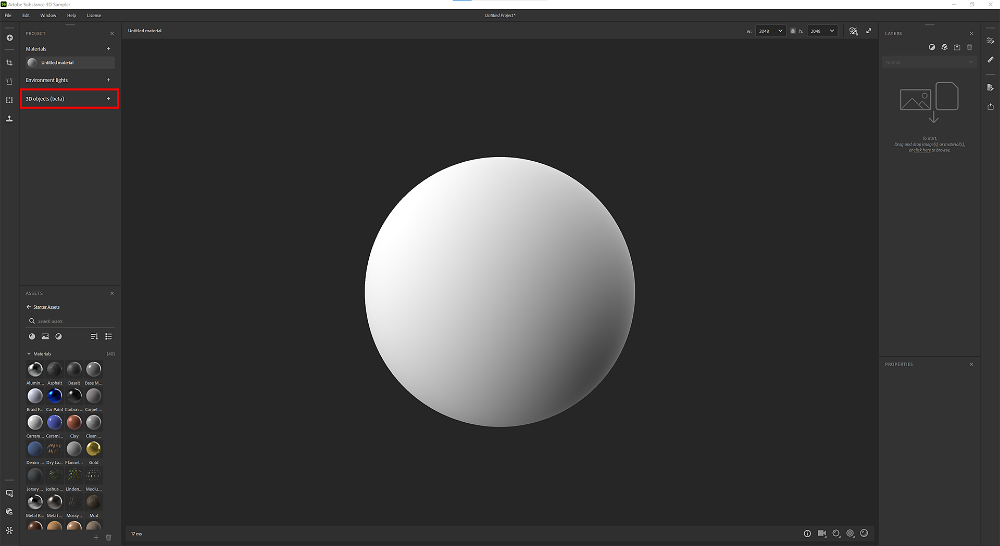
Drag and drop your photos or click to browse your OS explorer.
We recommend to have a dataset that contains at least 20 images for the 3D Capture to run smoothly.
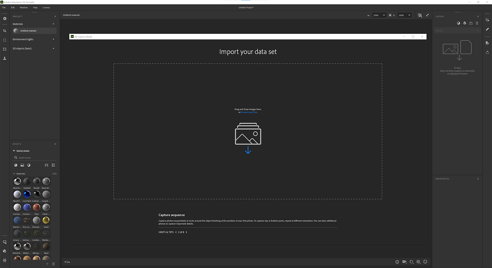
For iPhone users, .HEIC format is not yet supported. You can use Lightroom to convert to .jpeg.
On MacOS, you can use Quick Actions to convert your images.
For cameras RAW formats, we recommend to use Lightroom to convert your photos into .jpeg.
Windows: Your dataset has to be smaller than 6G pixels (6 000 000 000 pixels) in total. It represents 500 photos of 12M pixels
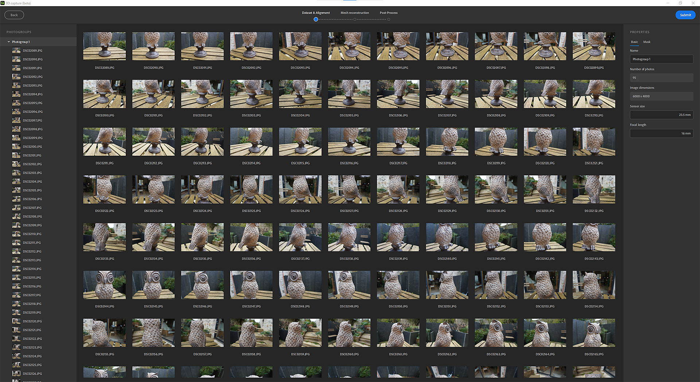
Once the photos are imported, you can click on a photo to see it in full.
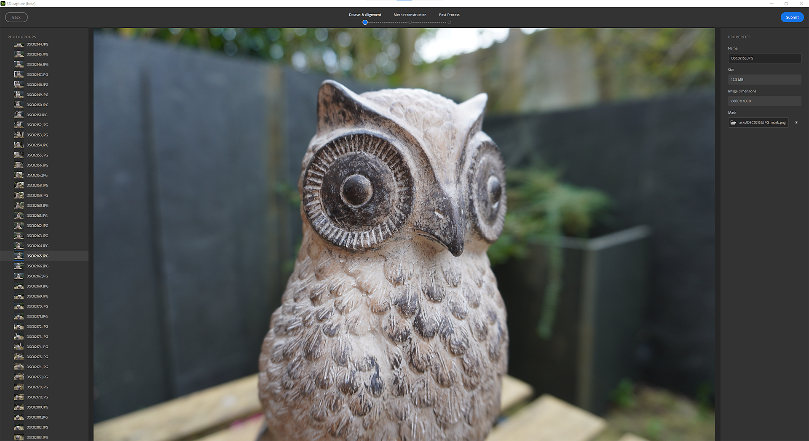
Photogroup definition:
Your dataset can be splitted in several photogroups. Photogroups group photos by properties (sensor size, focal length, rotation,…)
Using masks has many advantages. It allows the photogrammetry process to detect features and reconstruct only non-masked areas.
This allows also to move the object during the capture as the masks will hide background in all photos.
To use masks, select a photogroup and open the Mask tab on the right.
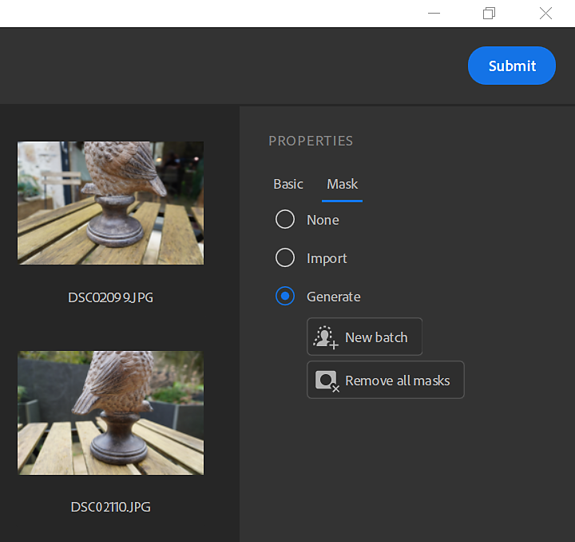
You can import masks by respecting a naming convention:
You can automatically generate masks by photos using our AI-powered technology.
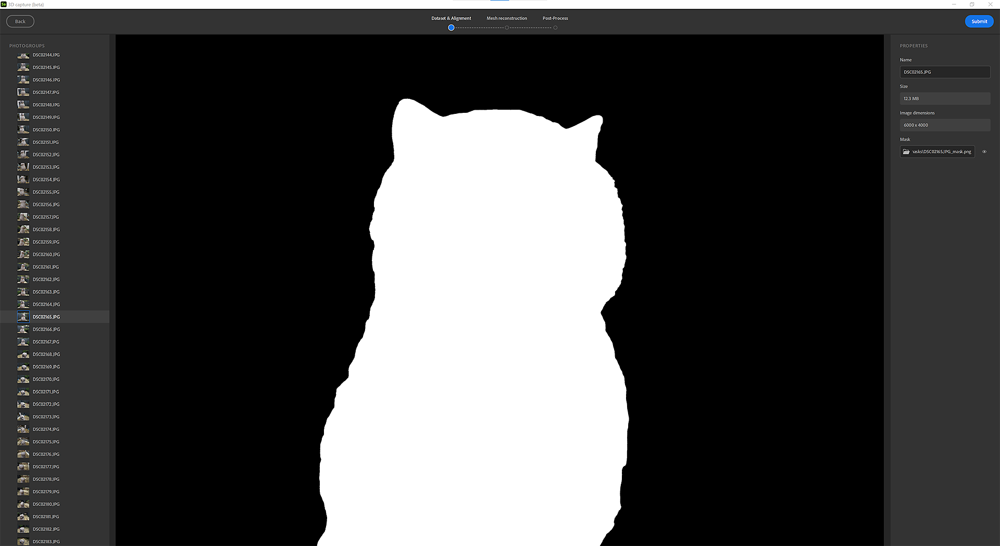
The alignment is to process all images to extract and match corresponding features to establish the relative positions of the camera for each image.
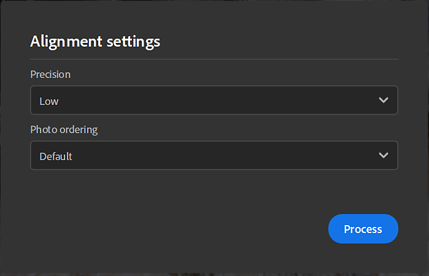
Precision
There are two options, low and high.
Photo ordering
There are two options, default and sequence.
This may be computed using different feature matching algorithms:
The result of the alignment step is a sparse point cloud with all features detected and the position of all cameras.
If the image outline is green, the image was correctly aligned.
If the image outline is orange, the image was not correctly aligned and no feature was extracted from this image.
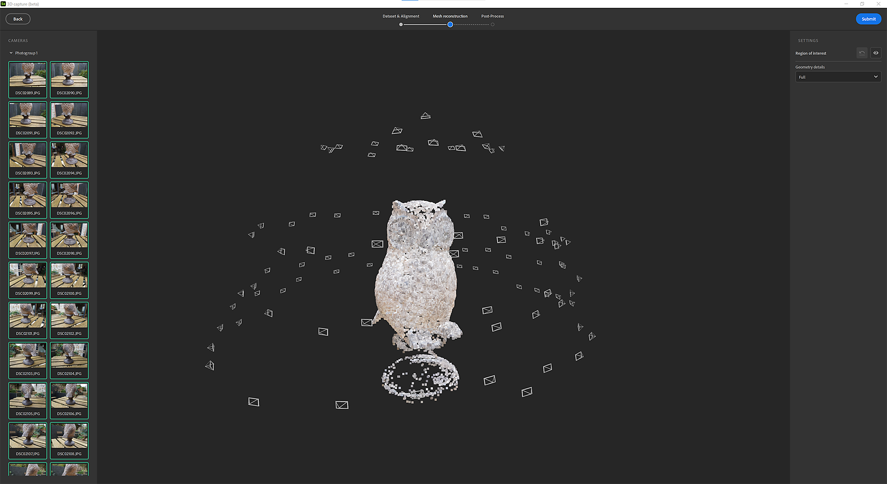
You can click on image on the left panel to frame the points cloud on the associated camera.
You can click on a camera to frame the points cloud on it.
The reconstruction step generates a 3D model of the object from the matched features as projecting the textures onto the 3D model.
Geometry details This option specifies the precision level in input photos, which results in more or less detail in the computed 3D model.
Before generating the 3D model, you can set the region to reconstruct around the point cloud with the bounding box.
You can translate, scale and rotate the box in the 3 axis.
By pressing Shift while scaling, you will scale the box from the center.
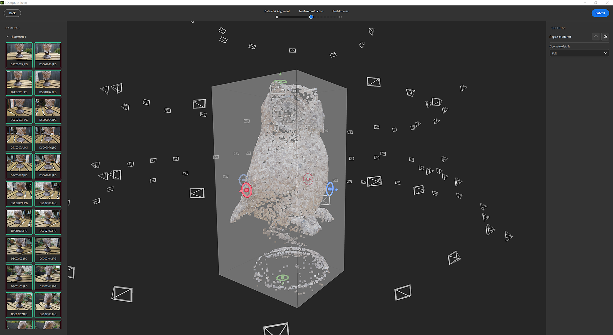
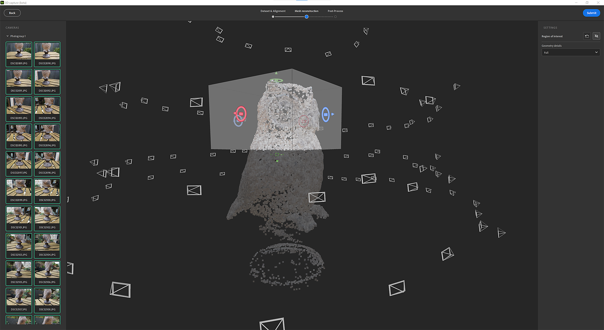
The post-processing helps you to adapt and optimize your mesh and textures to your needs and how you want to use it.
The result of the reconstruction can generate a mesh with millions of polygons and up to 16K textures. This often won’t be optimized for rendering, realtime or AR experience.
You will need to post-process the result to reduce the number of polygons without losing details.
The post-processing step chains 4 steps automatically:
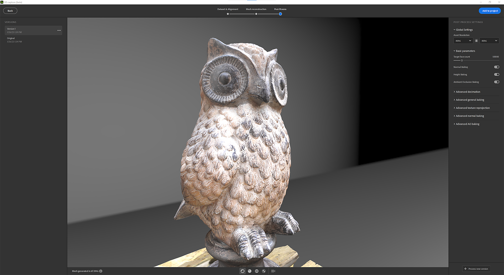
To easily iterate and test different post-process options, you can create several versions and select the one to add to your project.
To help you, you can visualize the mesh in different mode.
Solid mode
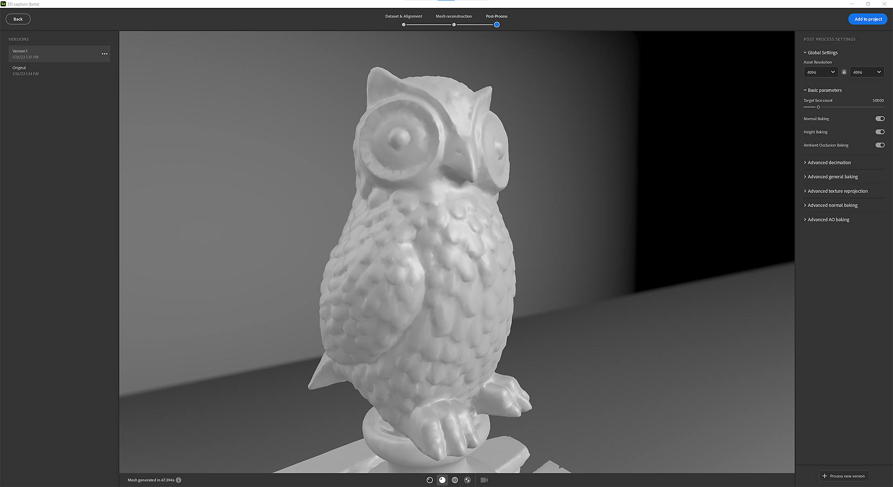
Wireframe mode
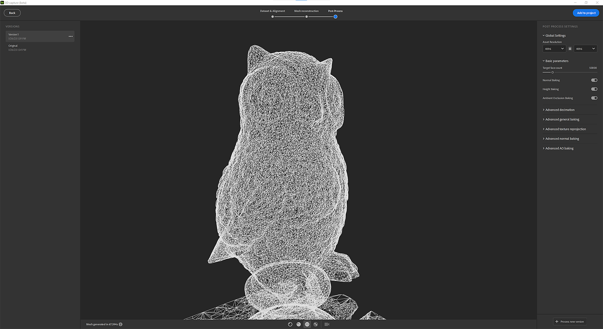
UV Grid mode
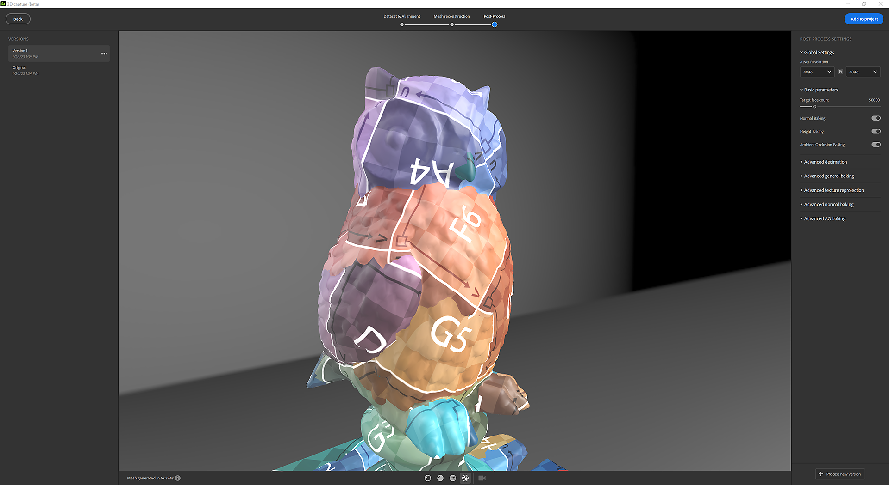
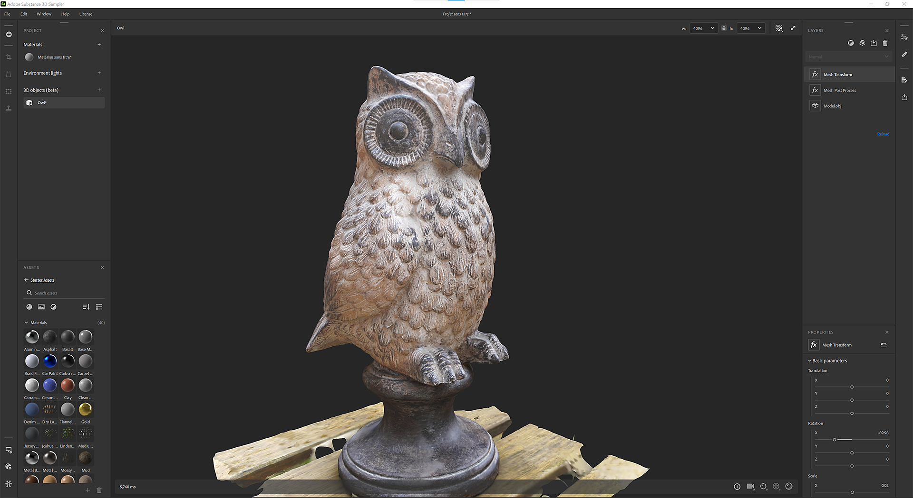
Once a version added to the project, a layer stack is created with several layers.
The first layer is the reconstruction result.
The second layer (if you did some post-process) is the mesh post-processing layer with the values defined in the 3D Capture window. You can still edit the parameters at this step if you want to use other settings.
The third layer is a mesh transform layer to scale, translate and rotate your 3D object.
At this stage, you can add filters you’re used to apply on materials to edit the textures on the 3D object.
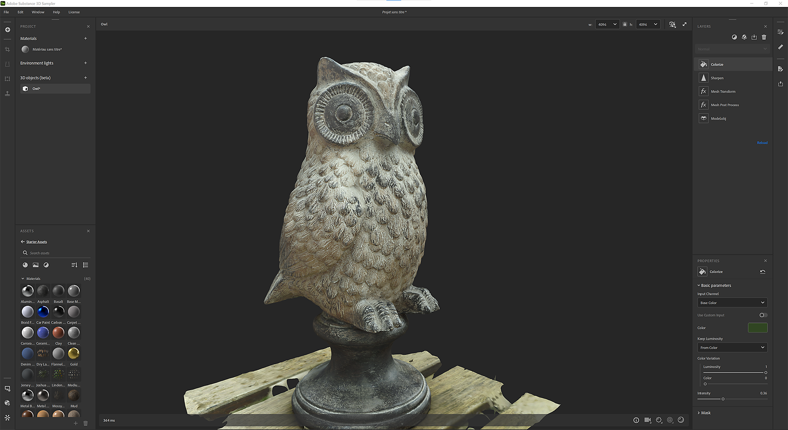
In the export window, you can define the mesh format and material settings (same settings when you export a material).
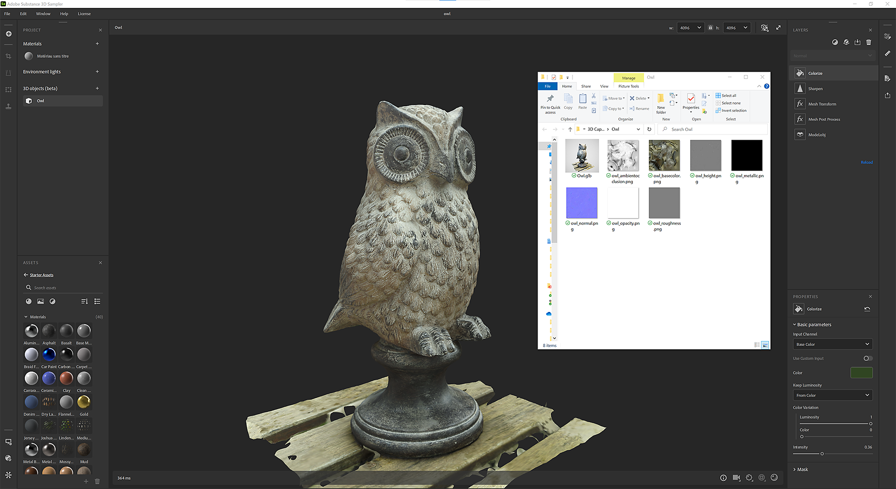
What are the best capture conditions for photogrammetry?
For photogrammetry to produce accurate results, it's important to follow certain best practices when capturing images.
How does it work for specular and reflective objects?
Photogrammetry can be challenging when working with highly specular or reflective objects, as the bright reflections can make it difficult to extract features from the images. Here are a few strategies that can be used to overcome these challenges:
Keep in mind that reflective objects may need more elaborate setup and treatments, and it may not be possible to get perfect results in all cases. It's a good idea to experiment with different techniques.
What is the recommendation between a mobile phone and DSLR camera for photogrammetry?
Both mobile phones and DSLR cameras can be used for photogrammetry, but they have different strengths and weaknesses. Here are a few things to consider when deciding which type of camera to use:
In summary, it really depends on your specific needs and the characteristics of the project. For lower resolution projects, a mobile phone may be sufficient. However, if high accuracy and high resolution is needed, a DSLR camera may be a better choice. Additionally, if you are planning to take photos on a regular basis or for a long-term project, investing in a DSLR camera may be a more cost-effective solution in the long run.
How should I calibrate my camera to limit the blur on my object ?
Camera calibration is an important step in the photogrammetry process that helps to correct for lens distortion and other errors that can affect the accuracy of the final results. Here are a few steps you can take to calibrate your camera and limit blur on your object:
Remember that calibration is an iterative process and might require multiple attempts to achieve good results.
Can I move the object during the capture for photogrammetry?
In most cases, it is not recommended to move the object during the capture for photogrammetry. The process of photogrammetry relies on the object being in a fixed position for each image, as the software uses the relative positions of features in the images to reconstruct a 3D model of the object.
If the object is moved during the capture, it will appear in a different position in each image, making it difficult for the software to match corresponding features between images. This can lead to inaccuracies in the final 3D model and can also make the image matching step difficult or impossible.
However, there are some cases where moving the object can be beneficial. For example, in the case of small objects, where it is difficult to take images with significant overlap, it's possible to use a turntable and rotate the object to ensure that all features are captured from multiple angles.